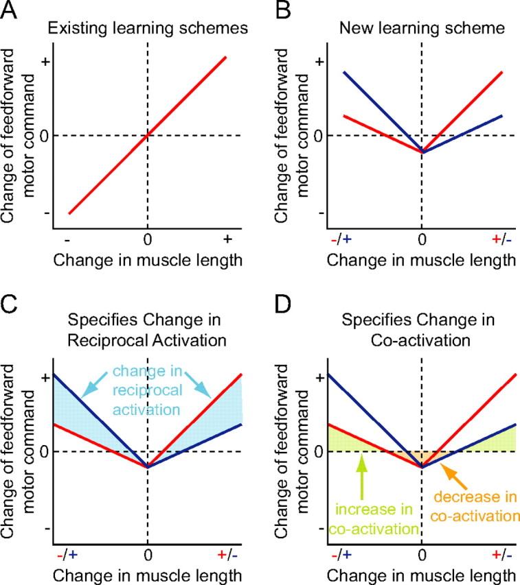
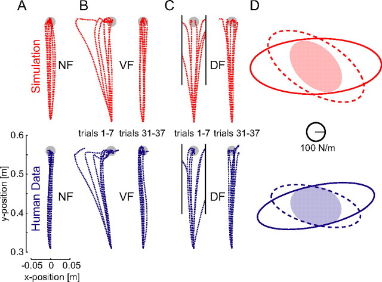

Impedance in the Human Motor System
Part of a series on sensorimotor neuroscience and robot learning: impedance · internal models · optimal feedback control · touch and grip · synergies and primitives · population dynamics.
The human arm does not just follow a planned path; it sets its own mechanical impedance, and it learns to set it. Four decades of experiments show that the nervous system shapes limb stiffness deliberately: anisotropically, along the directions the task makes unstable, through a learning rule simple enough to run on a robot. This review follows that line from measurement to mechanism to robot controllers.
1. Why impedance, not just motion or force
Hogan's argument (1985) is about ports. A manipulator coupled to an object exchanges power through force and velocity at the contact, and the environment, being made of masses, behaves as an admittance: it accepts force and returns motion. Two admittances in series do not compose well, so the manipulator should present the complementary causality, an impedance, a rule that returns force for motion,
$$F = K\,(x_0 - x) - B\,\dot x \;\big(+\, M(\ddot x_0 - \ddot x)\big),$$and control the parameters \(K, B, M\) together with the equilibrium \(x_0\). A year earlier Hogan (1984) had shown how a biological limb does this: co-activating antagonist muscles raises stiffness without changing net torque, because each muscle's stiffness grows with its activation while their torques cancel. Net torque and stiffness are two separately controllable outputs of the same pair of muscles.
2. Measuring the stiffness of a human arm
Mussa-Ivaldi, Hogan and Bizzi (1985) made the idea measurable. Subjects held a handle at a fixed posture while torque motors displaced the hand by a few millimetres in different directions; the restoring forces were recorded before any voluntary reaction could start. The force–displacement map is a matrix, the endpoint stiffness \(K_x\), and they drew it as an ellipse. Its shape and orientation changed strongly with arm configuration.
The geometry alone explains much of that. If the joints have stiffness \(K_q\) and the arm's Jacobian is \(J(q)\), then for small displacements (neglecting the load-dependent term)
$$K_x = J(q)^{-\top} K_q\, J(q)^{-1},$$so the same joint stiffness yields different endpoint ellipses at different postures (Figure 1).
3. Stiffness during movement, and why it argued for internal models
If the brain controlled movement only by shifting an equilibrium point and letting stiffness pull the hand along, the stiffness during movement would need to be high. Gomi and Kawato (1996) measured multijoint arm stiffness during reaching and found it low, so low that the equilibrium trajectory needed to produce the observed movements would have to be complex. Their conclusion was that the nervous system must also compute the forces it needs, using an internal model of the arm's dynamics (see internal models). Impedance and internal models are not rivals; the question became how the two divide the work.
4. Unstable tasks: learning where to be stiff
Burdet et al. (2001) answered with an environment no internal model can cancel. Subjects reached through a divergent force field that pushed the hand away from the straight path in proportion to the deviation, a negative stiffness. Because the push depends on the error, which is random, there is no feedforward force that removes it. Subjects learned to move straight anyway, and the measured endpoint stiffness grew mainly along the unstable direction, not uniformly. Franklin et al. (2003) showed the same people handle stable fields (which an internal model can cancel) and unstable ones with a combination of the two mechanisms.
Franklin et al. (2008) then proposed one learning rule that produces both. For each muscle, the change in its feedforward activation from one trial to the next is a V-shaped function of the muscle's stretch error (Figure 2): stretch raises activation a lot, shortening raises it a little, and a constant term lowers it. Errors of consistent sign shift the balance between antagonists, which is learning a force; errors of random sign raise both, which is learning stiffness; and the constant term removes co-contraction that is no longer needed, which keeps effort low.


The rule is simple enough to rebuild in a few lines. Figure 4 uses one antagonist pair whose difference sets force and whose sum sets stiffness, with trial-to-trial noise. In a constant force field the reciprocal command grows to cancel the push and co-contraction rises briefly before decaying; in a divergent field the reciprocal command stays near zero and co-contraction stays high.
5. Into robots
Yang et al. (T-RO 2011) turned the rule into a robot controller that adapts force, impedance and trajectory together, in stable and unstable interactions. Ajoudani, Tsagarakis and Bicchi (IJRR 2012) went the other way: tele-impedance estimates the operator's arm stiffness from muscle activity and commands it to the remote robot. Learned variable-impedance control in RL and imitation is the newest branch; my review of whether it beats a tuned fixed gain finds that it does mainly when something the controller fights varies unpredictably, which is exactly the condition Burdet's experiment isolated.
6. What robotics should take from this
- Separate the predictable from the unpredictable. Predictable loads belong in a feedforward or internal model; stiffness pays only for what cannot be predicted. A learned stiffness that rises in a constant field is a sign the policy has not learned the force.
- Stiffness is directional. The useful object is the ellipse, aligned with the instability. My note on stiffness geometry shows why interpolating ellipses needs care.
- Put a cost on co-contraction. The decay term in the V-shaped rule is what keeps the human solution efficient. Without an effort cost, "stiff everywhere" is free in simulation and wrong on hardware.
- Learn from trial-to-trial errors, not just within a trial. The rule updates between repetitions, which is a far smaller learning problem than end-to-end RL and works on a real arm.